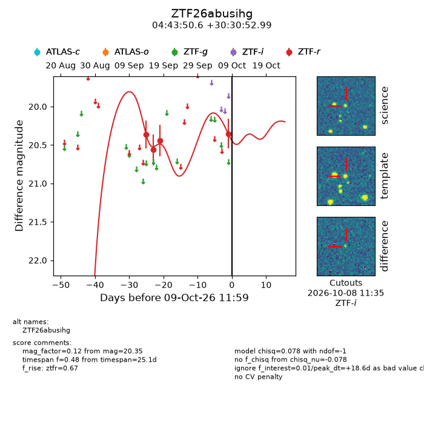
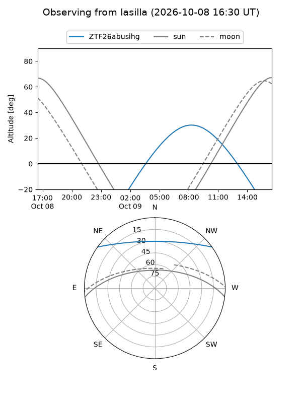
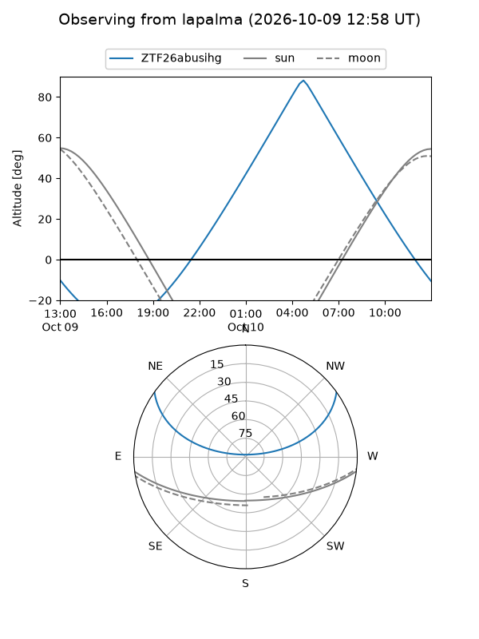
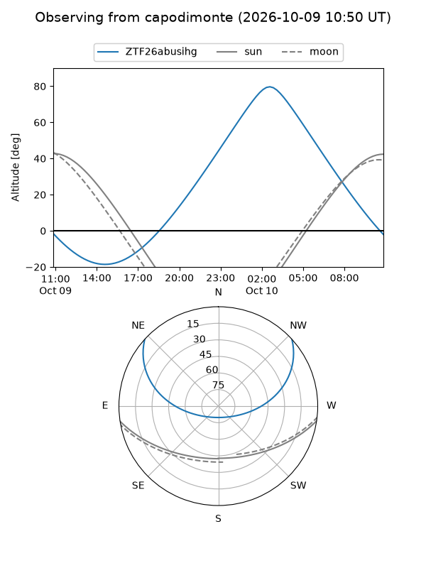
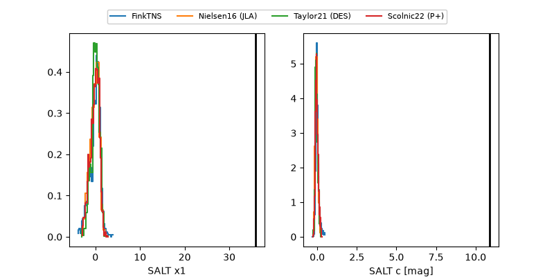

ZTF26abusihg
Target ZTF26abusihg at 2026-10-09 12:01
Aliases and brokers:
FINK-ZTF: ztf.fink-portal.org/ZTF26abusihg
Lasair-ZTF: lasair-ztf.lsst.ac.uk/objects/ZTF26abusihg
ALeRCE-ZTF: alerce.online/object/ZTF26abusihg
Direct TNS query: direct search
alt names
ZTF26abusihg (ztf,fink_ztf)
Coordinates:
equatorial (ra, dec) = 70.9610,+30.51472
equatorial (HMS+DMS) = 04:43:50.65,+30:30:52.99
galactic (l, b) = (170.8921,-9.99826)
Flags:
peak dt: +18.6
Photometry:
last ztfr=20.35
4 ztfr detections
Lightcurve

Visibility



Additional plots
